My Tech Stack

HTML
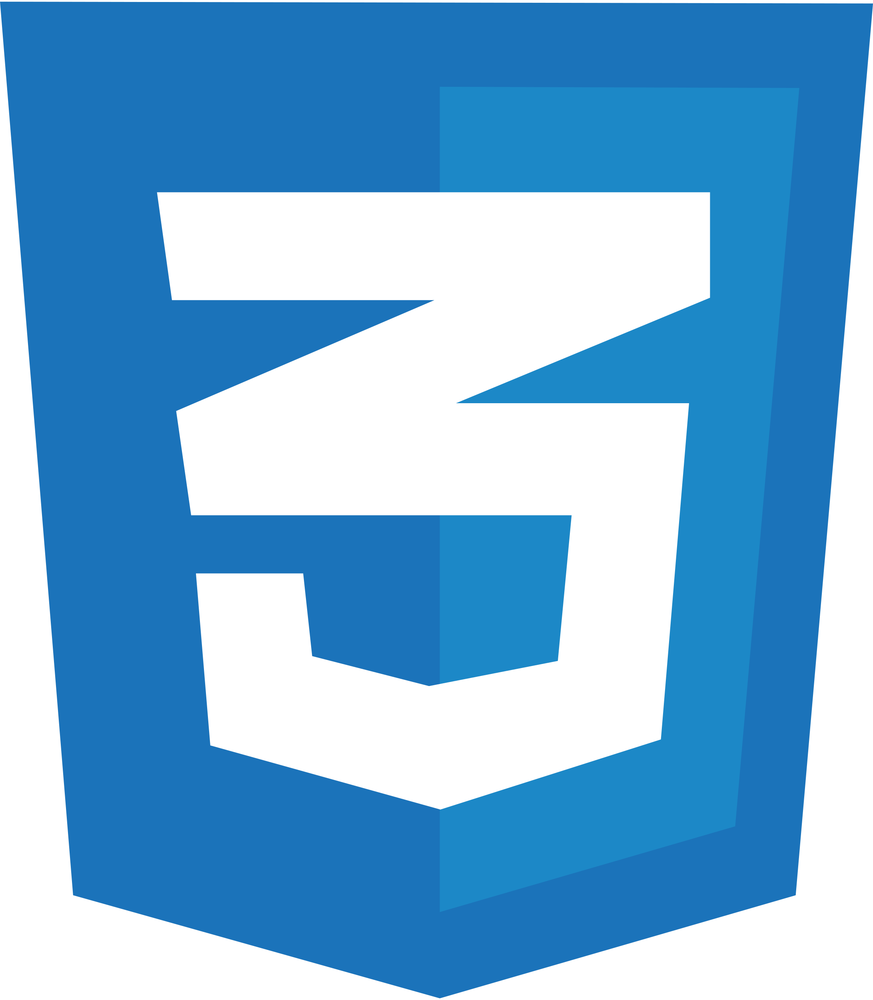
CSS
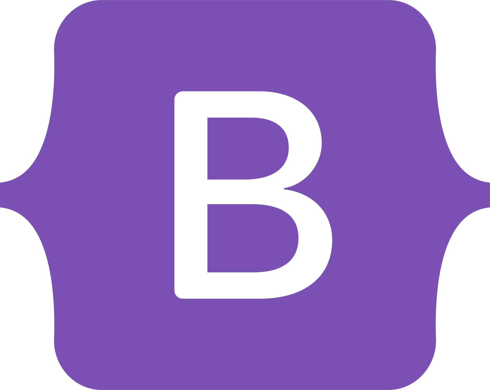
Bootstrap
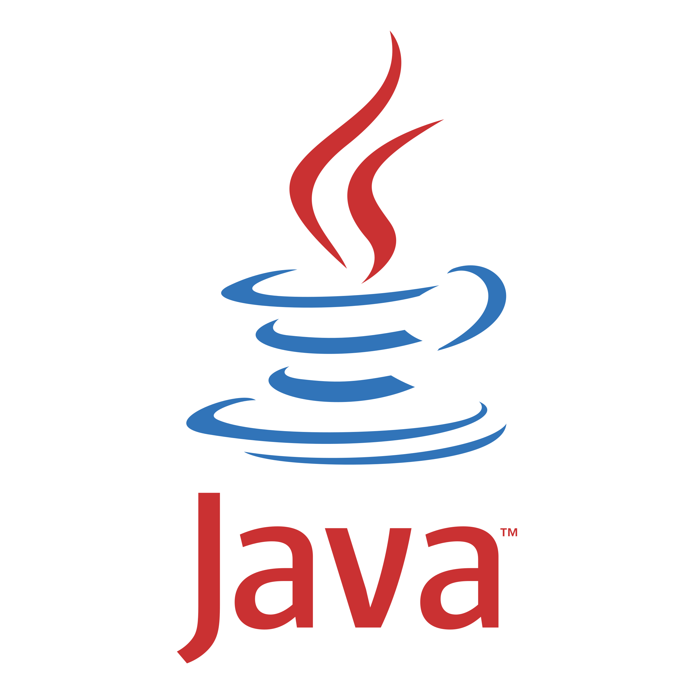
Java
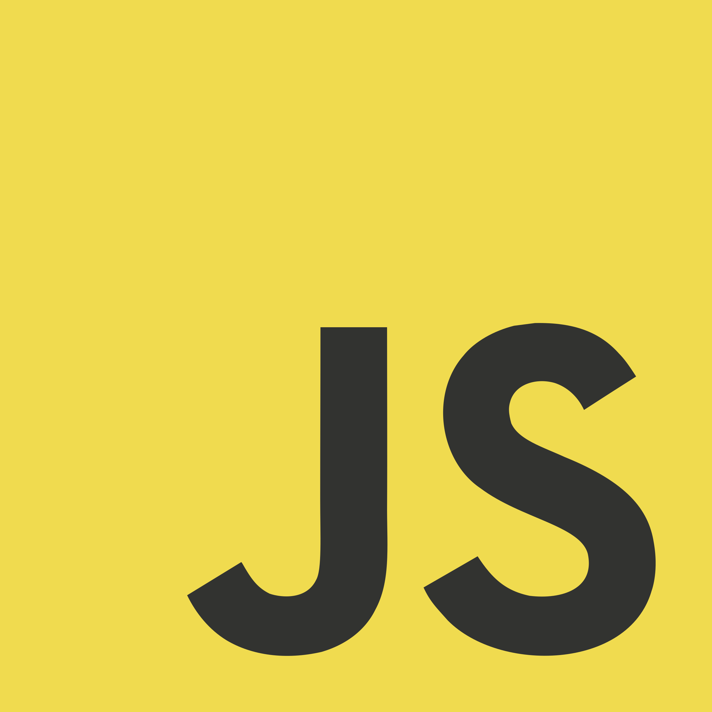
JavaScript
Oracle
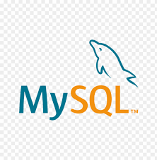
MySQL
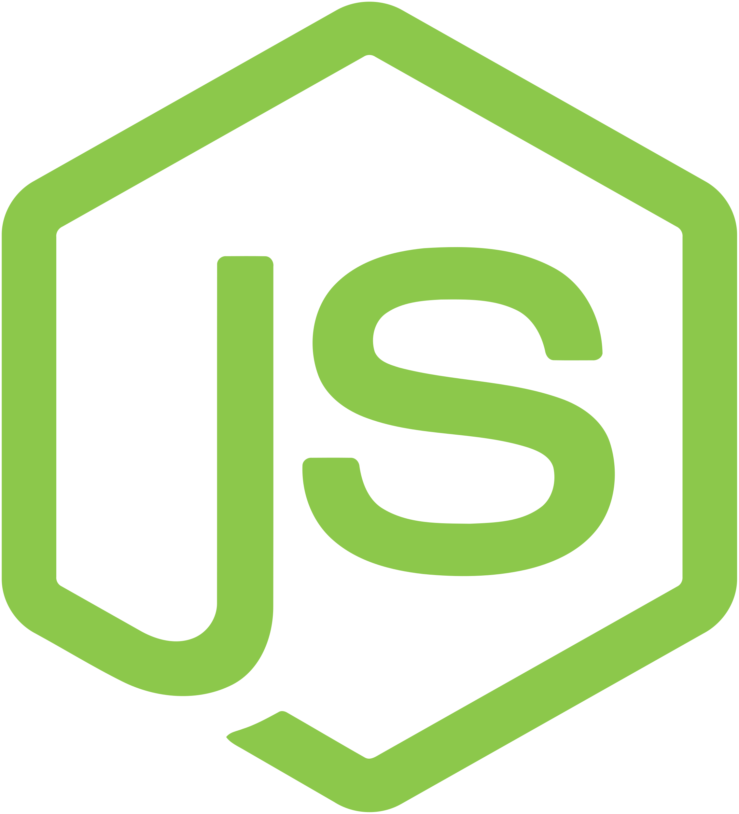
Node.js
MongoDB
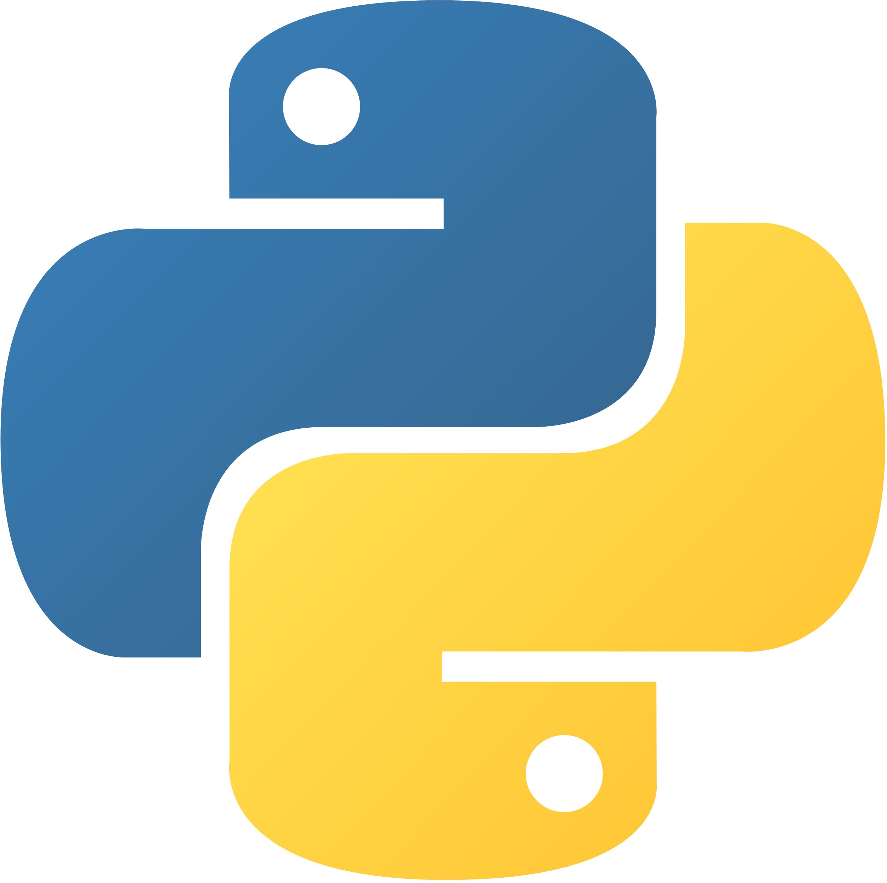
Python

React.js
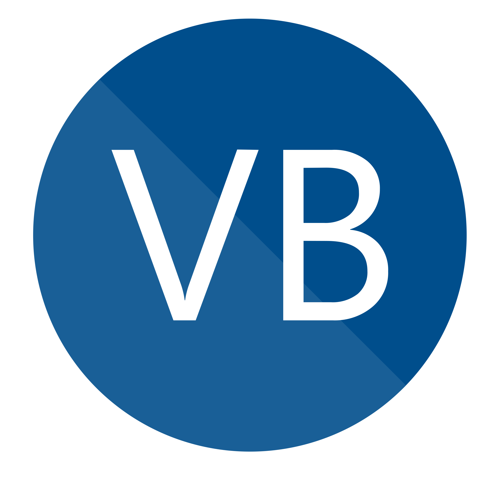
VB.Net
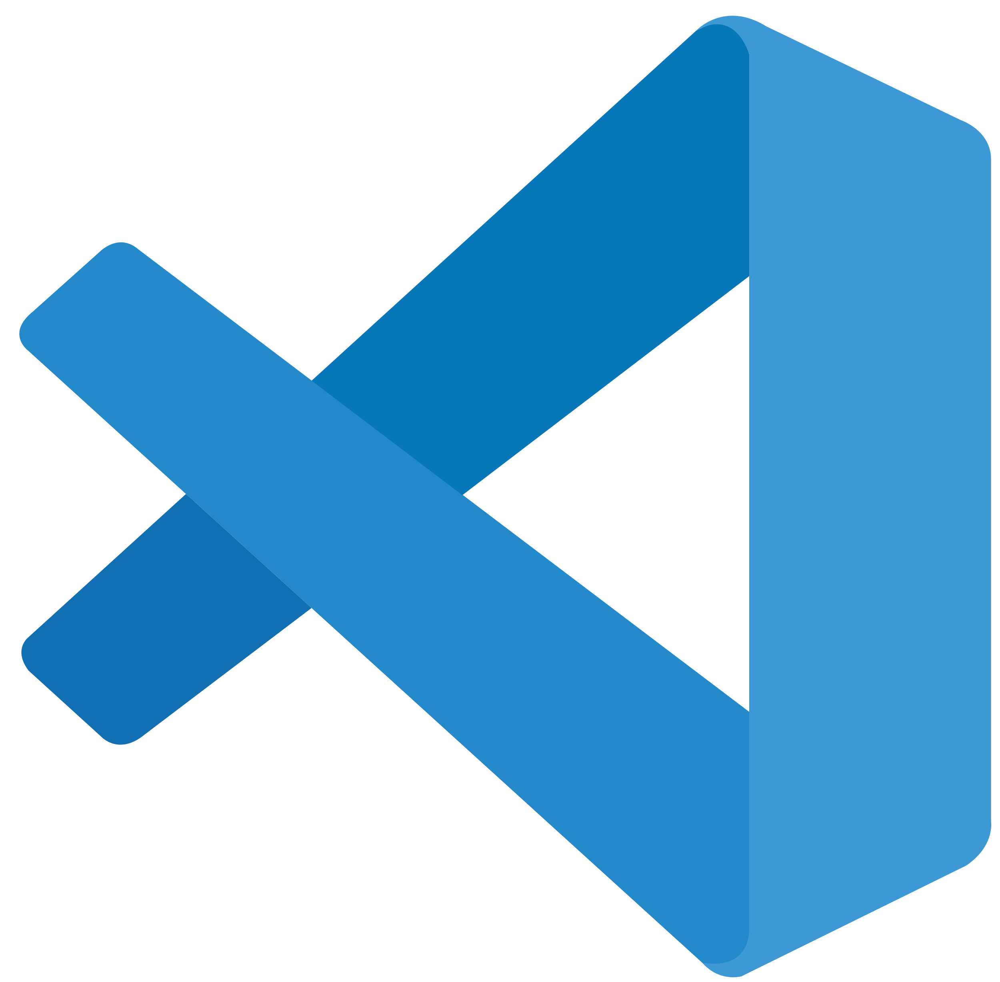
VS Code
ATOM

Sublime Text

Brackets
Eclipse 11

PyCharm
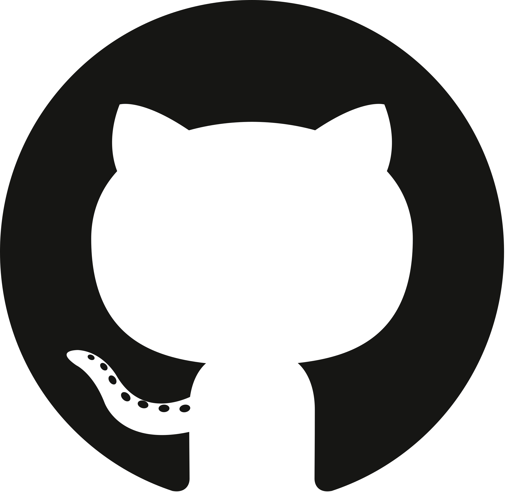
github
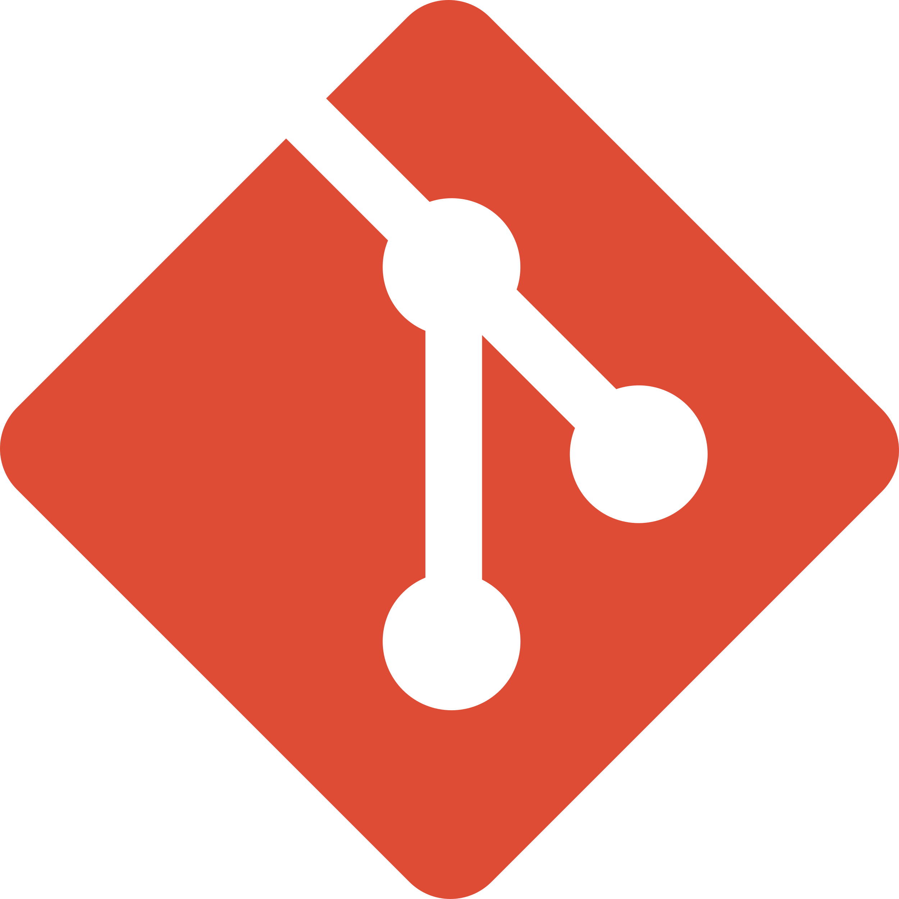
Git
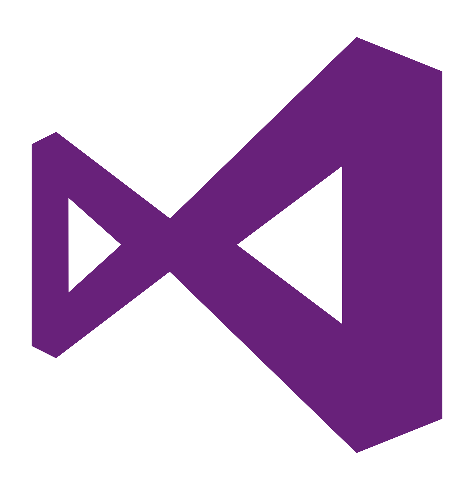
MS VS 2013
MS Office
Experience
Web soft IT solutions- Internship
Duration: Feb-2019 to May-2019
Mainly focused on Understanding IOT programs of Raspberry PI, Arduino and their connections with various modules & sensors and developed a project for handicapped persons.
Finger Controlled Wheel-Chair using Arduino & Flex sensor:
In order to use or operate this wheelchair user to wear a hand gloves on which flex sensors was attached, as person wearing those gloves bending his finger a signal gets sent to relay motors through Arduino board and wheels used to spin accordingly. An Obstacle sensor also were attached to wheel chair along with power source to charge batteries connected to this mechanism. This project was built to help handicapped persons to move their wheel chair with finger movement without any help of others.
Infosys BPM - Technical Process Executive
Duration: March-2021 to Feb-2022
• Worked in the healthcare domain which manages data and records of user.
• Manage reports of the user’s data.
• Assisted in the development and implementation of technical processes to improve operational efficiency.
• Collaborated with cross-functional teams to identify process gaps and recommend solutions.
• Data Monitoring & Presentation